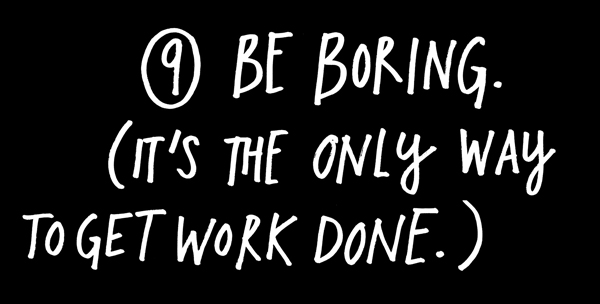
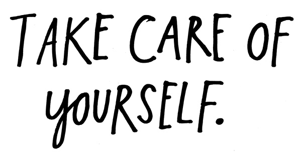
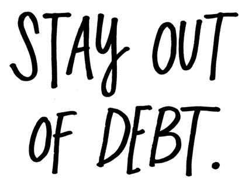
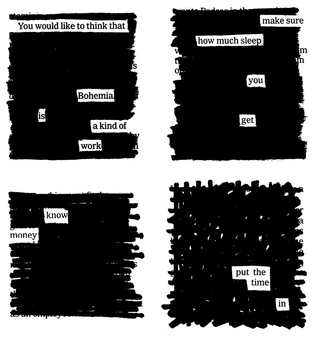
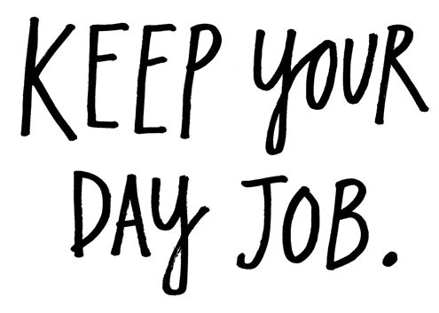
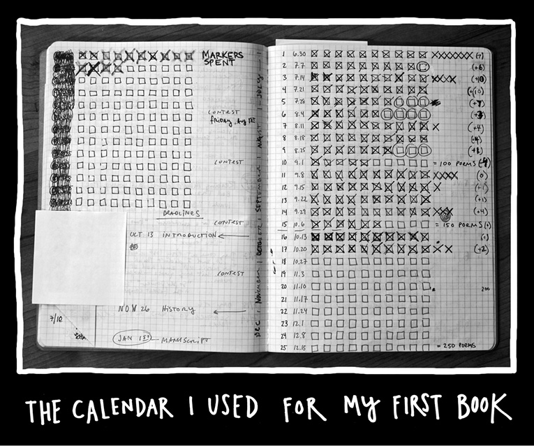
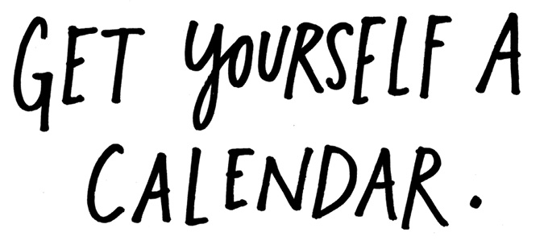
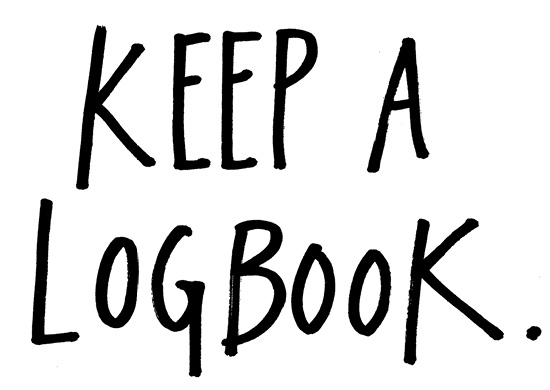
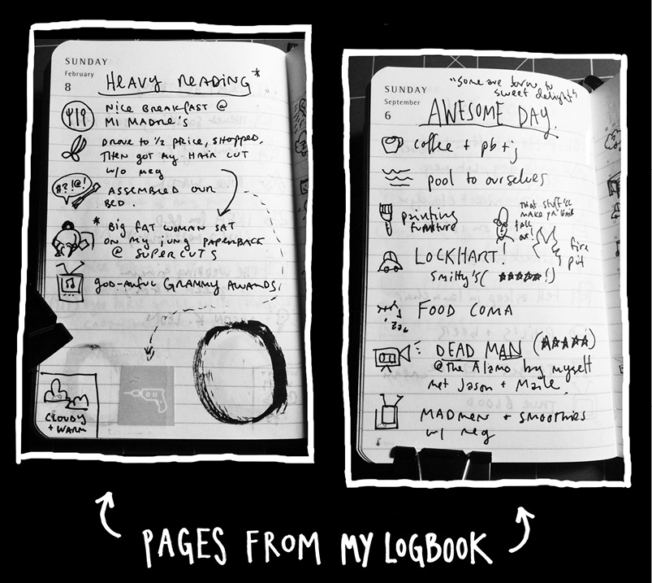
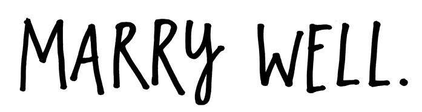

“Be regular and orderly in your life, so that you may be violent and original in your work.”
—Gustave Flaubert

I’m a boring guy with a nine-to-five job who lives in a quiet neighborhood with his wife and his dog. That whole romantic image of the creative genius doing drugs and running around and sleeping with everyone is played out. It’s for the superhuman and the people who want to die young. The thing is: It takes a lot of energy to be creative. You don’t have that energy if you waste it on other stuff.
It’s best to assume that you’ll be alive for a while. (It’s for this reason that Patti Smith tells young artists to go to the dentist.) Eat breakfast. Do some push-ups. Go for long walks. Get plenty of sleep.
Neil Young sang, “It’s better to burn out than to fade away.” I say it’s better to burn slow and see your grandkids.

Most people I know hate to think about money. Do yourself a favor: Learn about money as soon as you can.
My grandpa used to tell my dad, “Son, it’s not the money you make, it’s the money you hold on to.” Make yourself a budget. Live within your means. Pack your lunch. Pinch pennies. Save as much as you can. Get the education you need for as cheap as you can get it. The art of holding on to money is all about saying no to consumer culture. Saying no to takeout, $4 lattes, and that shiny new computer when the old one still works fine.


The truth is that even if you’re lucky enough to make a living off doing what you truly love, it will probably take you a while to get to that point. Until then, you’ll need a day job.
A day job gives you money, a connection to the world, and a routine. Freedom from financial stress also means freedom in your art. As photographer Bill Cunningham says, “If you don’t take money, they can’t tell you what to do.”
A day job puts you in the path of other human beings. Learn from them, steal from them. I’ve tried to take jobs where I can learn things that I can use in my work later—my library job taught me how to do research, my Web design job taught me how to build websites, and my copywriting job taught me how to sell things with words.
The worst thing a day job does is take time away from you, but it makes up for that by giving you a daily routine in which you can schedule a regular time for your creative pursuits. Establishing and keeping a routine can be even more important than having a lot of time. Inertia is the death of creativity. You have to stay in the groove. When you get out of the groove, you start to dread the work, because you know it’s going to suck for a while—it’s going to suck until you get back into the flow.
The solution is really simple: Figure out what time you can carve out, what time you can steal, and stick to your routine. Do the work every day, no matter what. No holidays, no sick days. Don’t stop. What you’ll probably find is that the corollary to Parkinson’s Law is usually true: Work gets done in the time available.
Nobody’s saying it’s going to be fun. A lot of times it will feel as if you’re living a double life. The poet Philip Larkin said the best thing to do is “try to be utterly schizoid about it all—using each personality as a refuge from the other.”
The trick is to find a day job that pays decently, doesn’t make you want to vomit, and leaves you with enough energy to make things in your spare time. Good day jobs aren’t necessarily easy to find, but they’re out there.


Amassing a body of work or building a career is a lot about the slow accumulation of little bits of effort over time. Writing a page each day doesn’t seem like much, but do it for 365 days and you have enough to fill a novel. One successful client pitch is a small victory, but a few dozen of them can get you a promotion.
A calendar helps you plan work, gives you concrete goals, and keeps you on track. The comedian Jerry Seinfeld has a calendar method that helps him stick to his daily joke writing. He suggests that you get a wall calendar that shows you the whole year. Then, you break your work into daily chunks. Each day, when you’re finished with your work, make a big fat X in the day’s box. Every day, instead of just getting work done, your goal is to just fill a box. “After a few days you’ll have a chain,” Seinfeld says. “Just keep at it and the chain will grow longer every day. You’ll like seeing that chain, especially when you get a few weeks under your belt. Your only job next is to not break the chain.”
Get a calendar. Fill the boxes. Don’t break the chain.

Just as you need a chart of future events, you also need a chart of past events. A logbook isn’t necessarily a diary or a journal, it’s just a little book in which you list the things you do every day. What project you worked on, where you went to lunch, what movie you saw. It’s much easier than keeping a detailed diary, and you’d be amazed at how helpful having a daily record like this can be, especially over several years. The small details will help you remember the big details.
In the old days, a logbook was a place for sailors to keep track of how far they’d traveled, and that’s exactly what you’re doing—keeping track of how far your ship has sailed.
“If you ask yourself ‘What’s the best thing that happened today?’ it actually forces a certain kind of cheerful retrospection that pulls up from the recent past things to write about that you wouldn’t otherwise think about. If you ask yourself ‘What happened today?’ it’s very likely that you’re going to remember the worst thing, because you’ve had to deal with it—you’ve had to rush somewhere or somebody said something mean to you—that’s what you’re going to remember. But if you ask what the best thing is, it’s going to be some particular slant of light, or some wonderful expression somebody had, or some particularly delicious salad.”
—Nicholson Baker


“She rescued me. I’d be playing in a steak house right now if it wasn’t for her. I wouldn’t even be playing in a steak house. I’d be cooking in a steak house.”
—Tom Waits, on his wife and collaborator, Kathleen Brennan
Who you marry is the most important decision you’ll ever make. And “marry well” doesn’t just mean your life partner—it also means who you do business with, who you befriend, who you choose to be around. Relationships are hard enough, but it takes a real champion of a person to be married to someone who’s obsessed with a creative pursuit. Lots of times you have to be a maid, a cook, a motivational speaker, a mother, and an editor—all at once.
A good partner keeps you grounded. A friend once remarked that living with an artist must make our house very inspiring. My wife joked, “Oh yeah, it’s like living with da Vinci.” She’s the best.